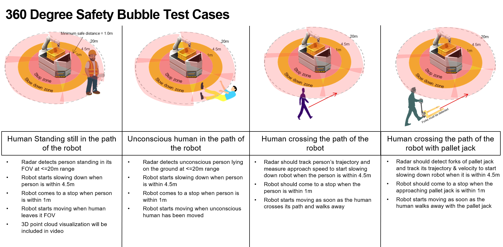

360° Safety Bubble with ROS for mmWave
===========
This lab allows for four TI mmWave sensors and a Turtlebot2 to be used with popular mapping and libraries in the Robot Operating System ([ROS](http://wiki.ros.org/)) environment.
The lab uses the move_base libraries with TI’s mmWave ROS Driver Package software to interface to the TI mmWave sensors. The lab supports use of IWR6843ISK ES2.0 Evaluation Module.
With the TI ROS driver and packages from the ROS community (ros.org) engineers may evaluate robot bubble sensing quickly and easily.
In this lab, the robot will move forward at a defined maximum speed. When an object come within a certain distance
to the robot, the robot will first slow down. If the same object continues to approach the robot, the robot will then stop moving forward.
Once the robot has cleared the object, the robot will speed up again to its maximum speed. It is assumed that the slow zone bubble is larger than the stop zone bubble.
Visit this link for an example demonstration: [http://www.ti.com/mmWaveROSsafetybubblevideo](http://www.ti.com/mmWaveROSsafetybubblevideo)
Below is an image depicting how the bubble demonstration functions. Note that the numbers shown in the image are configurable: 
To enable a full 360° field of view, four TI mmWave sensors are used. Should users not have access to four sensors, the lab also functions with one sensor. However, a fully surrounding field of view will not be possible.
## Hardware and Software Setup
Before starting the safety bubble demo, please follow the directions described in the [ROS Setup Guide with TI mmWave](../common/ROS Setup for Autonomous mmWave.html).
This guide will explain which hardware is necessary, how to setup the hardware, and the software installation process.
## 1. Sensor Bubble Demo
---------------
Here are the steps to run the sensor bubble demo.
1. Close all previous terminal windows if any were open.
1. Open a new terminal and change directory to the autonomous_robotics_ros folder provided in the mmwave_ti_ros git repository.
```
cd mmwave_ti_ros/autonomous_robotics_ros
```
2. SSH into the remote laptop, and run the following. If the EVM was not in a good state the roslaunch command will fail. Try resetting the EVM by
pressing the ‘NRST’ button on the EVM and then run the desired roslaunch command again. The `<device>` tag noted below can be one of the following: `6843ISK`, `6843AOP`, or `1843`.
```
$ roslaunch ti_mmwave_rospkg bubble_sensor_north.launch config:=3d device:=<device>
```
3. If there are no errors, then the north sensor has been configured correctly. Now stop the process by pressing 'Ctrl+C'. Single sensor users can now continue to the next step. For use with four sensors, repeat step 2 three more times but replacing 'bubble_sensor_north.launch'
with 'bubble_sensor_east.launch', 'bubble_sensor_west.launch', and 'bubble_sensor_south.launch', stopping the process with 'Ctrl+C' after each command. This process ensures that each sensor is configured correctly. Skipping this step is not recommended.
4. Open a new terminal window on the remote machine, ssh into the TurtleBot laptop and bring up the
TurtleBot and mmWave EVM with the command below. The `<device>` tag noted below can be one of the following: `6843ISK`, `6843AOP`, or `1843`.
* For setups running a single sensor:
```
$ roslaunch turtlebot_bringup minimal_single_sensor.launch mmwave_device:=<device>
```
* For setups running four sensors:
```
$ roslaunch turtlebot_bringup minimal_quad_sensor.launch mmwave_device:=<device>
```
5. To bring up the move_base and fake_localization nodes, open a new terminal window on the remote machine, ssh into the TurtleBot
laptop and run the following command.
* For single sensor:
```
$ roslaunch turtlebot_mmwave_launchers radar_navigation_single.launch
```
* For quad sensors use:
```
$ roslaunch turtlebot_mmwave_launchers radar_navigation_quad.launch
```
**Note**: You may see “octree is empty” warnings when there are no objects detected in front of the mmWave sensors.
5. At this point, the point clouds for all sensors and the global costmap should be alive. Open a new terminal window on
the remote machine and run the following command which will open a pre-defined Rviz configuration customized for the navigation demo.
* To show the inflation layer which is used for motion control (the command is all one line) for quad sensor:
```
$ rosrun rviz rviz -d mmwave_ti_ros/autonomous_robotics_ros/src/turtlebot_mmwave_launchers/launch/quad_sensor/bubble_visualization.rviz
```
* To hide the inflation layer and only show the point cloud data for quad sensor:
```
$ rosrun rviz rviz -d mmwave_ti_ros/autonomous_robotics_ros/src/turtlebot_mmwave_launchers/launch/quad_sensor/bubble_visualization_2.rviz
```
* To show the inflation layer which is used for motion control (the command is all one line) for single sensor:
```
$ rosrun rviz rviz -d mmwave_ti_ros/autonomous_robotics_ros/src/turtlebot_mmwave_launchers/launch/single_sensor/bubble_visualization.rviz
```
* To hide the inflation layer and only show the point cloud data for single sensor:
```
$ rosrun rviz rviz -d mmwave_ti_ros/autonomous_robotics_ros/src/turtlebot_mmwave_launchers/launch/single_sensor/bubble_visualization_2.rviz
```
**Note**: Both options show the point cloud from all four sensors, while each color represents a sensor direction. Specifically, points seen by the north sensor are displayed in purple, east sensor in red, south sensor in blue, and west sensor in orange.
6. Running the following will start the robot moving forward and either slow down or stop for a certain time
depending on whether or not objects are within the slow and stop zones. Both single and quad sensor users can execute:
```
$ roslaunch ti_safety_bubble controller.launch
```
[[r! The robot will now move forward
The robot will stop when an object in front of the north sensor is detected. However, it will continue to move
forward after some time, and then stop again. This process of moving forward and stopping continues until the
program has stopped. Always be ready to terminate the program by pressing Ctrl+C.
]]
# How It Works
---------------
This section will describe how the 360° safety bubble demo works. This lab uses a large portion of the open sourced
[ROS navigation stack](https://wiki.ros.org/navigation) and primarily uses the global costmap. The navigation
stack has been setup to input the point cloud from all 4 mmWave sensors into the global and local costmaps.
The navigation stack does not take control and navigate around the obstacles. Instead, by launching controller.launch,
the odomListener node takes the obstacle information from the global costmap and calculates the distance to the robot.
If the distance is within the slow zone threshold, the node then sends a velocity command to slow down the robot. If the
distance is within the stop zone threshold, a stop velocity is published. Information in the global costmap is always saved,
which is not suitable for moving objects as a history of where the objects has previously been will be stored. Thus is the
need to periodically clear the global costmap. This way only the recent obstacle layer history will be used.
## Configurable Parameters
---------------
1. The size, position, and resolution of the global costmap can be adjusted. To do this, edit the file 'global_costmap_params.yaml' in the path 'turtlebot/turtlebot_apps/turtlebot_navigation/param/'.
2. The size of zone bubbles and the time to clear costmaps are configurable. Zone bubbles are defined as radius from the center of the robot. Edit the parameters "slow_radius", "stop_radius", and "clear_costmap_period_secs" in controller.launch in the path 'ti_safety_bubble/launch/'.
Need More Help?
===========
* Fort Turtlebot2 issues and questions: <http://wiki.ros.org/Robots/TurtleBot#Robots.2BAC8-TurtleBot.2BAC8-kinetic.TurtleBot2>
* For ROS related questions: <https://answers.ros.org/questions/>
* Additional resources in the documentation of the mmWave SDK (note hyperlinks will only work if the mmWave SDK has been installed on PC):
* [mmWave SDK Module Doc located at `<mmwave_sdk_install_dir>/docs/mmwave_sdk_module_documentation.html`](file:///C:/ti/mmwave_sdk_03_05_00_04/docs/mmwave_sdk_module_documentation.html)
* [mmWave SDK User's Guide located at `<mmwave_sdk_install_dir>/docs/mmwave_sdk_user_guide.pdf`](file:///C:/ti/mmwave_sdk_03_05_00_04/docs/mmwave_sdk_user_guide.pdf)
* [mmWave SDK Release Notes located at `<mmwave_sdk_install_dir>/docs/mmwave_sdk_release_notes.pdf`](file:///C:/ti/mmwave_sdk_03_05_00_04/docs/mmwave_sdk_release_notes.pdf)
* Find answers to common questions on [mmWave E2E FAQ](https://e2e.ti.com/support/sensors/f/1023/t/595725)
* Search for your issue or post a new question on the [mmWave E2E forum](https://e2e.ti.com/support/sensor/mmwave_sensors/f/1023)